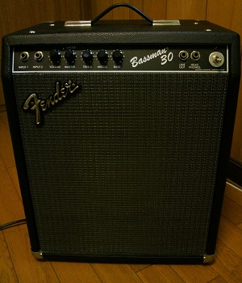
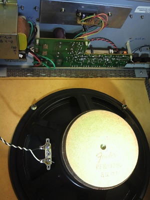

Fender Bassman 30 修理
2013年10月05日 カテゴリー：ギターアンプ・ベースアンプ

Fender Bassman 30というアンプをジャンクで入手しました。詳細はよくわかりませんが、裏パネルのシールにFender Japanと書いてあります。全く音が出ないので心配しましたが、スピーカーに繋ぐ配線が外れていただけでした。
せっかくなので電解コンデンサ、電源スイッチやネジ類を交換しました。内部の様子は下写真です。

回路図は採取していません。パワーアンプICはμPC1188です。よくコンプレッサーに使うICのCA3080が入っています。過大入力が入ったときにLEDが光るようです。トーンコントロールはよくあるドンシャリのパッシブトーン回路だと思います。